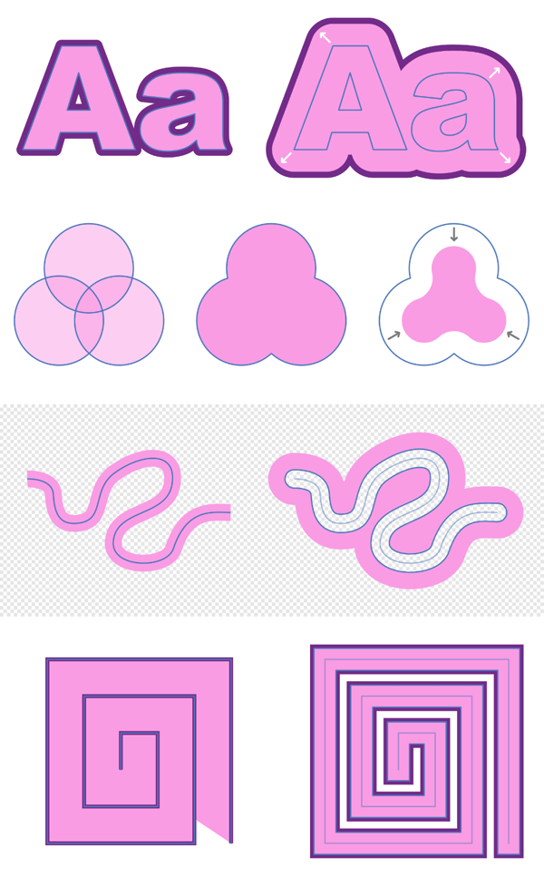

Contouring lets you offset the object outline and stroke of a curve or shape non-destructively.

With contouring, the object outline can be grown or shrunk in relation to the original outline—if a stroke is applied to the object it will also appear offset as it follows the object outline.
You can control the size of the contour by dragging; the stroke will resize itself and be offset as you drag inwards or outwards. You can also adjust the stroke's joins and alter the fill type of a shape, making it hollow or closed.
The underlying geometry is outlined to offer a better understanding of the effects of contouring and to optionally help you edit your object with the Node Tool.